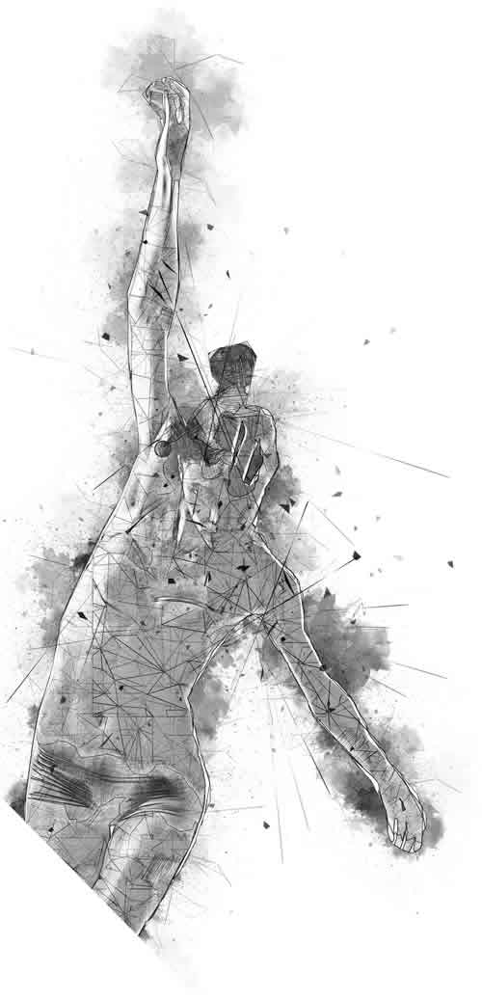

Parts & Stuff
The parts used and other items needed.
3D printer - I use Flashforge Adventurer 3 3D Printer. Amazon Link
PIR Infrared Motion Sensor (HC-SR501) Core Electronics Link
Light Dependent Resistor (LDR) Core Electronics Link
10K Ohm Resistor Core Electronics Link
ESP32 (or ESP8266 or any other ESP Microcontroller) Core Electronics Link
LDR Sensor Case (My 3D Model to print) Thangs
PIR Sensor Case (My 3D Model to print) Thangs
ESP32 (My 3D Model to print) Thangs
Automation (I use Apple)
Raspberry Pi (with Wifi) - I use 3B which was lying around unused
Homebridge, mosquitto MQTT, Node Red installed on Pi

Schematics
Hooking things up!
Use 3v3 or 5v5 vcc, I have used one for PIR and one for LDR. The sensors are able to drop to 3.3v if 5v is used.
I could not find ESP32 Schematics, so the diagram below shows Ardunio instead, but the idea is basically the same.
LDR is analog, on ESP32, Digital Pins can do Analog (check ESP32 Pinout)
PIR is digital so any of the digital pins will do, make sure to set it to INPUT in startup
Below is Node Red flow. I use HomeBridge plugin MQTT-Thing found here it lets you add HomeKit Accessories Types
Result
How it works